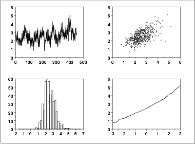
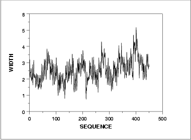
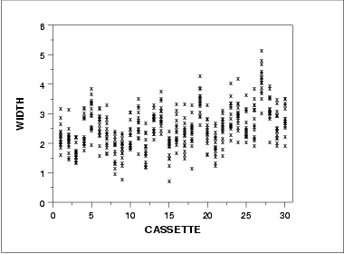
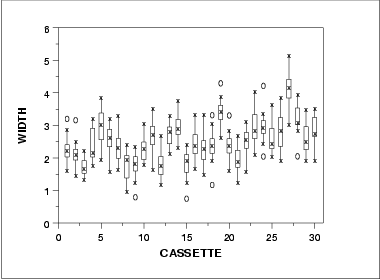
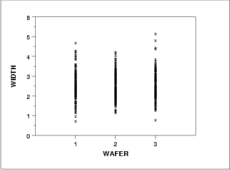
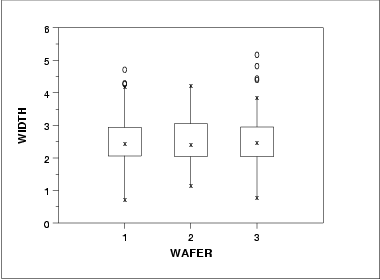
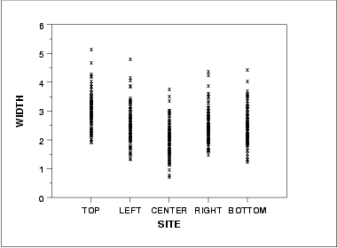
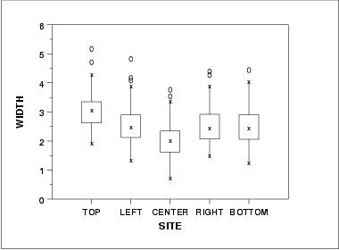
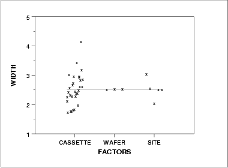
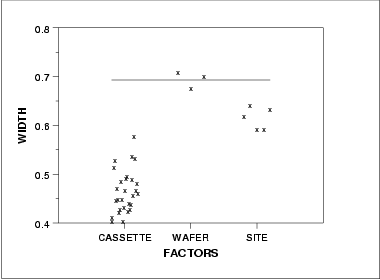

|
6.
Process or Product Monitoring and Control
6.6. Case Studies in Process Monitoring 6.6.1. Lithography Process
|
|||
| The first step in analyzing the data is to generate some simple plots of the response and then of the response versus the various factors. | |||
| 4-Plot of Data |  | ||
| Interpretation |
This 4-plot
shows the following.
|
||
| Run Sequence Plot of Data |  | ||
| Plot response against individual factors | The next step is to plot the response against each individual factor. For comparison, we generate both a scatter plot and a box plot of the data. The scatter plot shows more detail. However, comparisons are usually easier to see with the box plot, particularly as the number of data points and groups become larger. |
| Scatter plot of width versus cassette |  |
| Box plot of width versus cassette |  |
| Interpretation |
We can make the following conclusions based on the above scatter
and box plots.
|
| Scatter plot of width versus wafer |  |
| Box plot of width versus wafer |  |
| Interpretation |
We can make the following conclusions based on the above scatter
and box plots.
|
| Scatter plot of width versus site |  |
| Box plot of width versus site |  |
| Interpretation |
We can make the following conclusions based on the above scatter
and box plots.
|
| DOE mean and sd plots | We can use the DOE mean plot and the DOE standard deviation plot to show the factor means and standard deviations together for better comparison. |
| DOE mean plot |  |
| DOE sd plot |  |
| Summary |
The above graphs show that there are differences between the lots and
the sites.
There are various ways we can create subgroups of this dataset: each lot could be a subgroup, each wafer could be a subgroup, or each site measured could be a subgroup (with only one data value in each subgroup). Recall that for a classical Shewhart means chart, the average within subgroup standard deviation is used to calculate the control limits for the means chart. However, with a means chart you are monitoring the subgroup mean-to-mean variation. There is no problem if you are in a continuous processing situation - this becomes an issue if you are operating in a batch processing environment. We will look at various control charts based on different subgroupings in 6.6.1.3. |